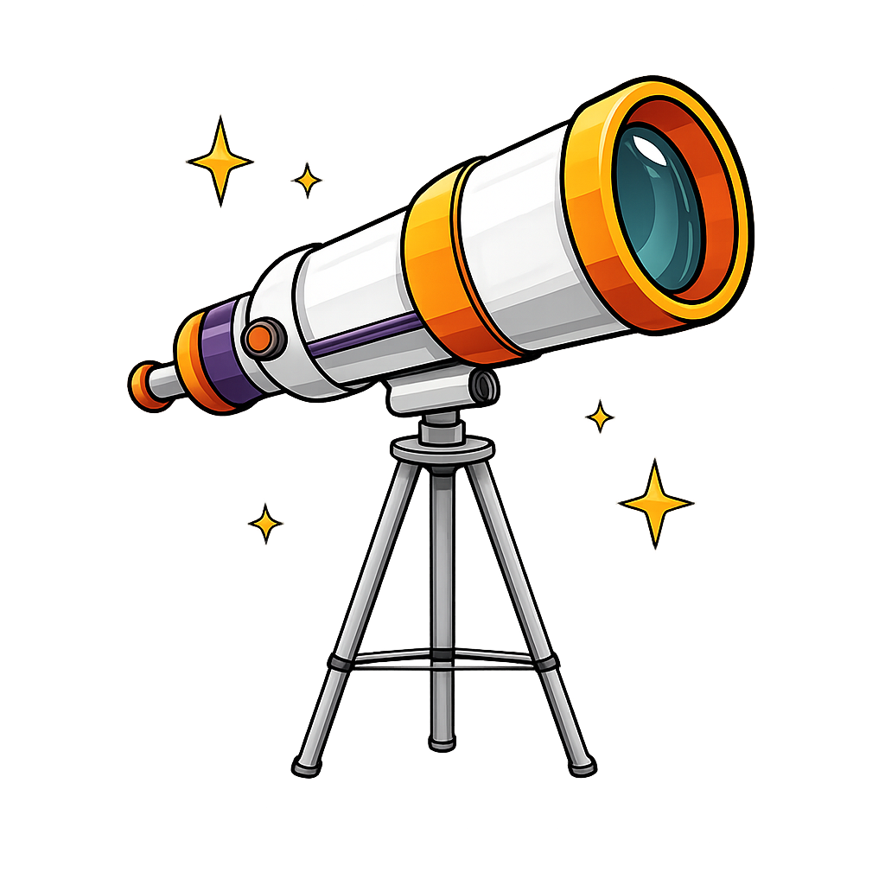

We once thought the solar system was fully mapped.
But in August 2025, astronomers using NASA’s James Webb Space Telescope identified a new moon of Uranus S/2025 U1.
Even now, there is more to discover!
Click anywhere
Continue